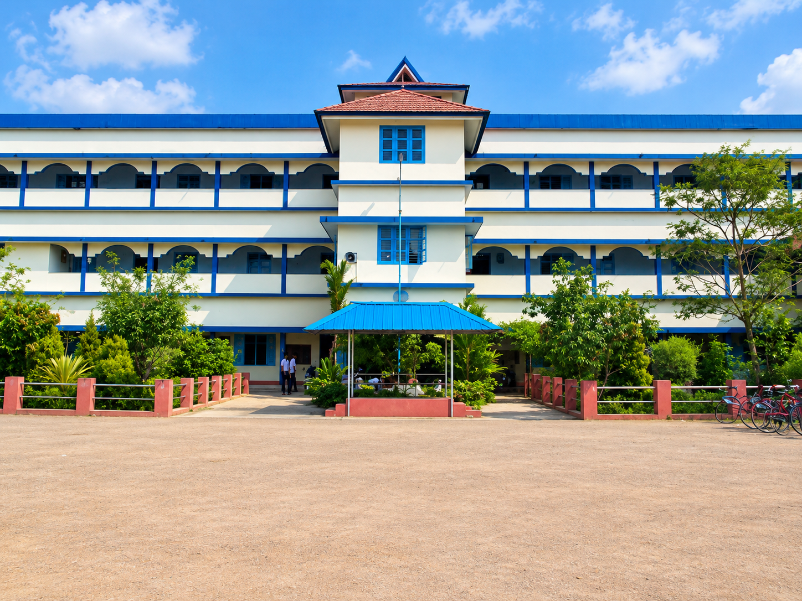

The institution
Our story, our purpose.
Explore our history, mission, Higher Secondary programmes, clubs, service activities, tours, and sports.
Every corridor has a story. Every classroom holds a thousand small moments. This is a home for the school we remember—and the people who made it ours.

Founded by local citizens and shaped by generations of learners, Thiruvampady HSS continues to be a place for academic learning, personal growth, friendship, and community.
Learn about the institution, then step into Secret Alley to discover the memories shared by each batch.
Explore our history, mission, Higher Secondary programmes, clubs, service activities, tours, and sports.
Search by batch/year to find approved memories from every class, or submit a note of your own.
Academic excellence matters. So do curiosity, character, creativity, teamwork, service, and the small moments that stay with us long after a school day ends.
“The days that felt ordinary often become the memories we keep closest.”
YOUR BATCH. YOUR PEOPLE. YOUR STORIES.